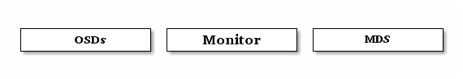

Ceph 简介¶
不管你是否想为云平台提供 Ceph 对象存储和/或 Ceph 块设备，你都应该部署一个 Ceph 文件系统，以备不时之需；所有 Ceph 存储集群的部署都始于各 Ceph 节点、网络和 Ceph 存储集群。最简的 Ceph 存储集群至少要一个监视器和两个 OSD 守护进程，只有运营 Ceph 文件系统时元数据服务器才是必需的。

- Ceph OSDs: Ceph 对象存储守护进程(Ceph OSD)的功能是存储数据，处理数据复制、恢复、回填、重均衡，并向监视器提供邻居的心跳信息。一个 Ceph 存储集群自动复制两份数据时，至少需要两个 OSD 守护进程才能达到 active+clean 状态（ Ceph 默认复制三份，此值可调）。
- Monitors: Ceph 监视器维护着各种集群状态图，包括监视器图、 OSD 图、归置组（PG）图、和 CRUSH 图。 Ceph 维护着监视器、 OSD 和 PG 各自的状态变更历史（称为 epoch ）。
- MDSs: Ceph 元数据服务器(MDS)为 Ceph 文件系统存储元数据（也就是说 Ceph 块设备和 Ceph 对象存储不依赖元数据）。元数据服务器有益于 POSIX 文件系统调用，像 ls、find 等等，因为无需每次直接读取 Ceph 存储集群。
Ceph 把客户端数据保存为存储池内的对象。根据 CRUSH 算法， Ceph 可计算出哪个归置组应该持有指定对象，然后进一步计算出哪个 OSD 守护进程持有归置组，正因为有了 CRUSH 算法， Ceph 存储集群才具备动态伸缩、重均衡和自修复功能。
建议开始把 Ceph 用于生产环境前，您应该看看我们的硬件和操作系统建议。 | 参与欢迎您加入社区，贡献文档、代码，或发现软件缺陷。 |